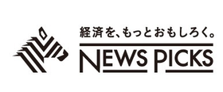
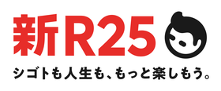
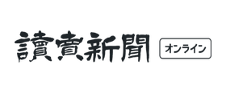
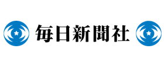
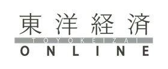
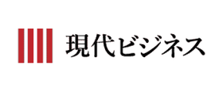
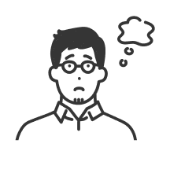
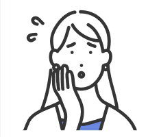
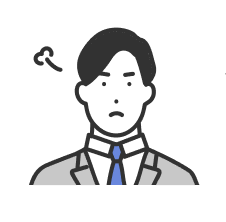

支援実績4,200名以上
満足度97%※
メディア
掲載多数







「就活の軸は？」と聞かれて
言葉に詰まった

「なぜうちなの？」に
会社を褒めることしかできなかった

お祈りメールには
どこが悪かったか書いていない
志望動機は
会社のことを調べて作った
「他の会社ではだめなの？」
と聞かれて詰まった
AIで整えた志望動機が
テンプレっぽい
直したくても、
何を直せばいいか分からない。
企業は、落ちた理由をほとんど教えてくれません。
それでもまた、同じような質問で落ちてしまう。
2回、3回と深掘りされると、答えに詰まってしまう。
それは、直している所と、評価が下がっている所がずれているからかもしれません。
それは、志望動機の作り方そのものが、ずれているからかもしれません。
面接官の評価 この学生は…
入社後に、成果を出せそうか
この会社で、続けられそうか
「軸は？」「なぜうち？」「ガクチカは？」
どの質問も、この2つを確かめるためのものです。
就活の軸は何ですか？
よくある答え人の役に立てる仕事がしたいです。
面接官NG目線どの会社にも言えて、この会社で何をするかが見えない
理想の回答相手の困りごとを、先回りして解決する仕事がしたいです。飲食店のアルバイトで常連さんの好みを覚えて先に提案したら、指名してもらえるようになった経験からです。
なぜ弊社なのですか？
よくある答え業界トップで、成長できる環境だと思ったからです。
面接官NG目線会社を褒めているだけで、ここで続ける理由が見えない
理想の回答私の軸は「相手の困りごとを先回りして解決すること」です。説明会で、導入後の支援まで同じ担当が続けると伺い、お客様と長く関われる点が自分の軸に一番合うと感じました。
学生時代に力を入れたことは？
よくある答えサークルの部長として、大会を成功させました。
面接官NG目線結果だけで、何を考えて動いたかが見えない
理想の回答練習の参加率が半分まで落ちていました。原因は練習の目的が伝わっていないことだと考え、学年ごとに話を聞いて内容を見直しました。大会前には参加率が9割に戻りました。
※ 答えの例です。どこで下がるかは、人や面接によって違います。
落ちる人がつまずく“同じ所”は、
この2つのどちらかです。
面接官の深掘り 1回目から3回目まで
「業界トップで、成長できる環境だと思ったからです」
「御社の理念に共感したからです」
ここで、言葉に詰まる
会社の情報は、誰が調べても同じ。
だから、深掘りされるほど答えが続かなくなります。
なぜ弊社なのですか？
よくある答え業界トップで、成長できる環境だと思ったからです。
ここで止まる会社の情報だけで、誰でも言える。「他社でもいいのでは？」と聞かれると続かない
経験から作った答え飲食店のアルバイトで、常連さんの好みを覚えて先に提案したら、指名してもらえるようになりました。説明会で、導入後の支援まで同じ担当が続けると伺い、お客様と長く関われる点がこの経験に一番合うと感じました。
入社したら、何をしたいですか？
よくある答え御社の主力の事業に携わり、成長したいです。
ここで止まる会社の説明をなぞっているだけで、あなたがそこで何をするかが見えない
経験から作った答えアルバイトで続けてきた「相手の困りごとを先回りして解決する」ことを、お客様の担当として続けたいです。導入したあとに困りそうな所を先に見つけて、長く使ってもらえる形をつくりたいです。
※ 答えの例です。合う所は、人や会社によって違います。
深掘りされても止まらないのは、
あなたの経験から作った志望動機です。
自分の経験は、自分が一番よく知っています。でも、その会社が面接で何を確かめたいのかは、外から調べても分かりません。
AIや例文で文を整えても、つなぐ所が自分の言葉になっていなければ、深掘りされたところで止まってしまいます。
だからこそ、大事なのは
あなたの経験と、会社が確かめたいことを、つなげて言葉にすること。企業から届くのは「合格」か「不合格」だけ。どの答えで点が下がったのかは、教えてもらえません。
回答例を覚えても、友達に聞いてもらっても、分かるのは「良い答えかどうか」まで。面接官がどう採点したかは、分からないままです。
だからこそ、大事なのは
本番の前に、面接官の目線で採点してもらうこと。受けている企業、落ちた面接、そこで聞かれた質問を教えてください。
よく聞かれる質問に、本番と同じ流れで答えてもらいます。
例：「就活の軸は？」「なぜ弊社なのか」「学生時代に力を入れたこと」
「活躍できるか」「長く働けるか」のどちらで評価が下がったか。言い直しまで一緒に組み立てます。
次の選考の日から逆算して、やることを決めます。
受けている企業と、面接で詰まった質問を教えてください。
サークル・アルバイト・ゼミで、何を考えて、どう動いたかを一緒に掘り下げます。
担当は、企業の人事とも直接やりとりしています。面接で何を確かめているかを踏まえて、あなたの経験とつなげます。
「なぜうち？」「他の会社ではだめ？」と、本番どおりに聞いて確かめます。
REFLAMEから応募した選考なら、面接のあとに人事からの評価も担当に届きます。ご自身で応募した企業の評価は届きません。
担当は、学生の就活の相談に乗りながら、企業の人事とも直接やりとりしています。
人事が面接で何を確かめているかを踏まえて、あなたの答えを一緒に見直します。
REFLAMEは、厚生労働大臣の許可を受けた有料職業紹介事業者です
（許可番号 27-ユ-303562）
「軸は？」と聞かれて、なんとなく答える。何がだめだったか分からないまま、また落ちる。
面接官が何を確かめたいかが分かっている。言い直した答えで、落ち着いて話せる。
会社の説明をなぞった志望動機。「他の会社ではだめなの？」と聞かれて、言葉に詰まる。
自分の経験から話せるので、深掘りされても、自分の言葉で答えられる。
求人を押し付けられない？
まずは、あなたの面接の直し方を考えるところからです。
まずは、あなたの志望動機を考えるところからです。
お金がかかるんじゃない？
採用が決まった企業からいただく紹介料で運営しているため、学生の方から費用をいただくことはありません。
今の選考の相談だけでもいい？
ほかのサービスと一緒に使っても構いません。
まだ面接を受けたことがない
本番の前に一度、面接官の目線で確かめておきましょう。
志望動機が、まだできていない
これまでの経験をふり返るところから、一緒に始めます。
わざわざ出かけるのは大変
スマホからでも参加できます。
面接が上手くなりたい28卒の方へ
本番どおりの模擬面接で、評価が下がっている所を見つけて、言い直しまで一緒にやります。
あなたの経験と、その会社の合う所をつないで、深掘りされても話せるまで一緒にやります。
個人情報の取り扱いに同意して予約します。求人の押し付けはしません。
1回の面談は60分ほどです。オンラインで、スマホからでも参加できます。
REFLAMEを通して応募した企業の選考に限ります。ご自身で応募した企業については、模擬面接で評価が下がった所を確かめます。
はい。インターンの選考の面接も、本選考と同じように練習できます。
同じ答え方のまま次の面接を受けると、また同じ所で評価が下がるかもしれません。次の選考の日が来る前に、どちらで下がっているかだけでも確かめておきませんか。
会社の情報だけで作った志望動機のまま本命の面接を受けると、深掘りされたところで、また言葉に詰まるかもしれません。本命の選考が来る前に、あなたの経験から作り直しておきませんか。
無料相談を予約する 志望動機の相談を予約する※満足度：自社調べ／2025年4月〜2026年4月／有効回答数2,000件
掲載メディアには、プレスリリース配信による掲載を含みます。